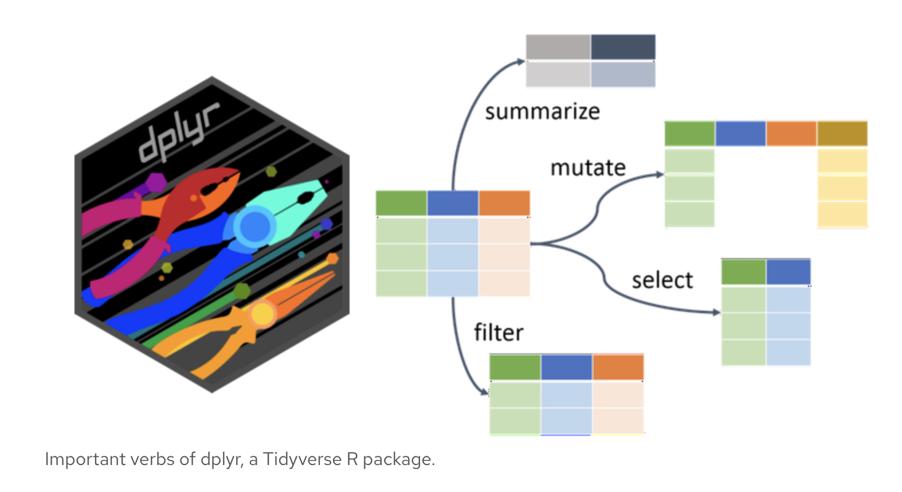

35:00
Quiz 2 and Lab 5
Importing Dataframes
STAT 133
Agenda
- Quiz 2
- Review: Dataframe Manipulations
- Quarto Slides
- How can we format slides?
- 4th Quarto Publication
Before the Quiz
Important
A note on academic integrity:
Cheating is 100% not tolerated. Talking with other individuals during the quiz, using your phone for any reason, looking at others’ answers, etc. will result in a violation of the Academic Integrity Pledge. We reserve the right to give a 0 to anyone seen cheating.
Before the Quiz
- Spread out as much as possible.
- 🚽 If you need to use the bathroom, this is the time to do it.
- 🧹 Clear your desk of everything except a pen/pencil and your ID.
- 🧢 Remove hats, hoods, and sunglasses (don’t hide your face please!)
- 📱 All electronic devices (laptop, phone, airbuds, smart watch) should remain in your bag for the entire quiz period.
Quiz
- Please be quiet.
- When you get a quiz, do not begin until we tell you so.
- Write your name and SID.
- Keep your eyes on your own quiz.
- Only one person allowed to use the bathroom at a time.
- If you finish early, please hold on to your quiz and wait.
- When the timer ends, hold up your quiz in the air immediately and put your writing utensils down or risk a 0.
Good luck! 🍀
Lab 5
Review: What is dplyr?
A package in the tidyverse that provides a set of functions for data manipulation and transformation in R
dplyr Functions

dplyr Functions
mutate(): add/change/calculate new variables (columns)select(): select, choose variables (columns) based on their namesfilter(): filters, chooses observations (rows) based on their valuessummarise(): resume, reduce multiple values to a single summary valuearrange(): order, changes the order of rows based on their valuesgroup_by(): groups, performs data operations on groups defined by variables
Example: dplyr Functions
Let’s use the penguins dataset from the palmerpenguins package to see how these functions work in practice.
# A tibble: 6 × 8
species island bill_length_mm bill_depth_mm flipper_length_mm body_mass_g
<fct> <fct> <dbl> <dbl> <int> <int>
1 Adelie Torgersen 39.1 18.7 181 3750
2 Adelie Torgersen 39.5 17.4 186 3800
3 Adelie Torgersen 40.3 18 195 3250
4 Adelie Torgersen NA NA NA NA
5 Adelie Torgersen 36.7 19.3 193 3450
6 Adelie Torgersen 39.3 20.6 190 3650
# ℹ 2 more variables: sex <fct>, year <int>Example: dplyr Functions
To find the penguin species with the highest average body mass, we can use a combination of functions from dplyr:
Example: dplyr Functions
Now for lowest average body mass:
Quarto Slides
Last week we learned how to create slides and include code.
This week, we add some new skills to present information:
- Line highlighting
- Global Transitions
- Introducing data
Code Line Highlighting
How can you draw attention to specific lines of code in slides?
Code Line Highlighting

“2”: highlights line 2
“3-4”: highlights lines 3 through 4
Global Formatting
You can set global formatting options for your slides in the YAML header.
Last week:
Transitions - Globally
To set a global transition,
demo-pub3.qmd
Find more transition types on the Quarto Website
Introducing Data
To add coding content to your slides, you can read in a .csv file.
Use your terminal to create a demo-pub4.qmd file in your stat133 folder. Find this data ev-sales-cleaned.csv in BCourses under pub4 and read it in to your .qmd slides file.
First steps - Understand the table
year county make model fuel_type sales
1 2023 Alameda Alfa Romeo Tonale PHEV 2
2 2023 Alameda Audi Q4 e-tron Electric 141
3 2023 Alameda Audi Q4 e-tron Sportback Electric 31
4 2023 Alameda Audi Q5 PHEV 43
5 2023 Alameda Audi Q8 e-tron Electric 72
6 2023 Alameda Audi Q8 e-tron Sportback Electric 20Talk to a partner and answer the following questions:
- How many rows and columns are in the dataframe?
- What do the columns and rows represent?
- What are the data types of each column?
- What year does the data cover?
03:00
Each column:
year: the year of the sales (only covers 2023)county: the county in California where the EVs were soldmake: the make/brand of the EV soldmodel: the model of the EV soldfuel_type: the type of fuel used by the EV (electric, hybrid, etc)sales: the number of EVs sold in that county for that make and model in that year
Quarto Pub
Pub4
You are an intern for the California Energy Commission which is invested in the charging infrastructure and technologies that are helping to drive the transition to clean, zero-emission electric vehicles throughout the state.
Your task: Create a presentation to share with the public about the current state of electric vehicle (EV) adoption in California.
Pub4 Note
Assume that your published slides will be seen by a boss or team-lead.
Ensure your presentation is:
- well organized
- easy to read and understand
- professionally presented
Pub4 Requirements
- A title slide with the title of your presentation and your name.
- Provide an overview of the current state of EV adoption in California, with key statistics:
- County with the highest number of electric vehicles
- County with the lowest number of electric vehicles
- Most popular model of electric vehicle
- Least popular model of electric vehicle
- Use at least 3 of the formatting techniques we’ve learned so far (line highlighting, slide backgrounds, global transitions, code folding, etc.)
15:00
Like last week: Folder stat133/
Terminal in IDE
Launch your IDE (Positron or RStudio)
Launch your Terminal (next to the Console tab)
cdto yourstat133/labs/foldercreate a folder for this lab:
mkdir lab5cdtolab5
Publishing Steps
Assume I have a file called demo-pub4.qmd opened in Positron. To publish my qmd file to my QuartoPub account I follow these steps:
- Go to the Terminal tab.
- Make sure your working directory contains the qmd file.
- Type command:
quarto publish demo-pub4.qmd - Choose provider Quarto Pub and press return (enter)
- Publish with default account (linked to my email address)
- Optionally: you can change the name of the document
- Press return (enter)
Once published, there will be an associated link (URL), something like: https://username.quarto.pub/demo-pub-4
Submission to bCourses
Submit the URL (link) of your published document to the corresponding assignment in bCourses.
See Assignments tab > Quarto Publications > Pub4
Problem Set 4
Pset 4
Available in bCourses:
See Assignments tab > Problem Sets > PS4
You’ll find 2 files:
ps4.html: instructionsps4.qmd: template file to write your answers
In case of trouble: Go to Files tab, folder problem-sets, folder ps4, and download the qmd file.
Sometimes Safari blocks or denies you access. If this is the case you may want to use another browser (e.g. Chrome).
Pset 4 Submission
- Submit your
qmdandhtmlfiles to bCourses. - Use assignment problem set ps4
- Graded credit / no-credit
- Credit for evidence of earnest engagement (just don’t submit a blank or empty template file)